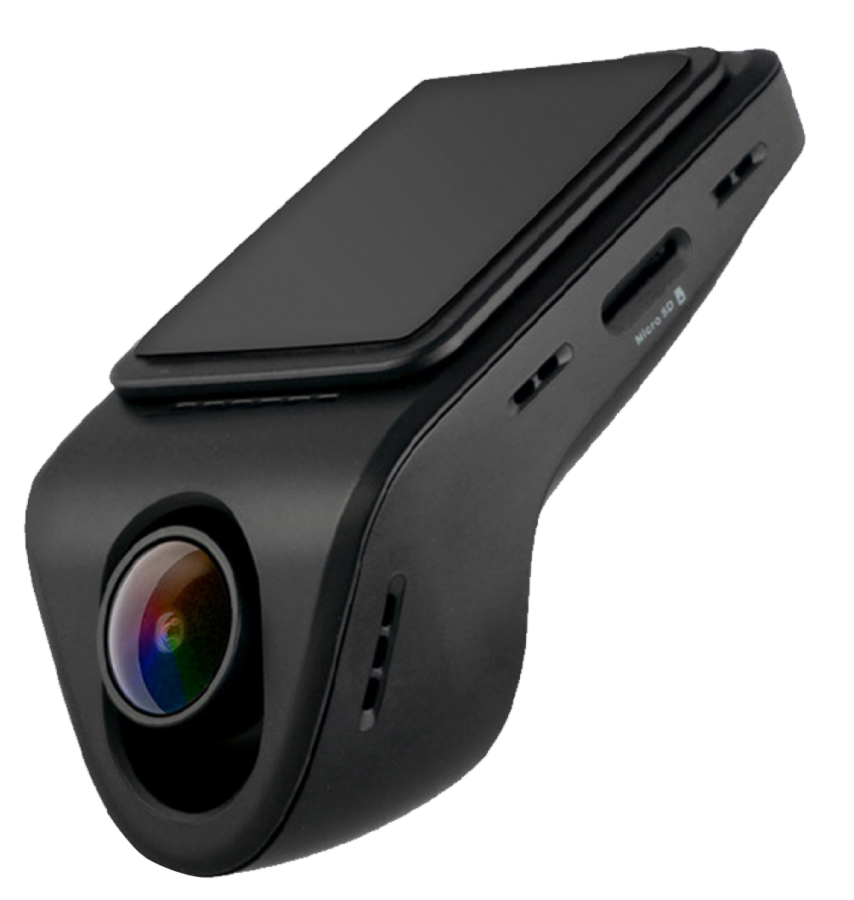
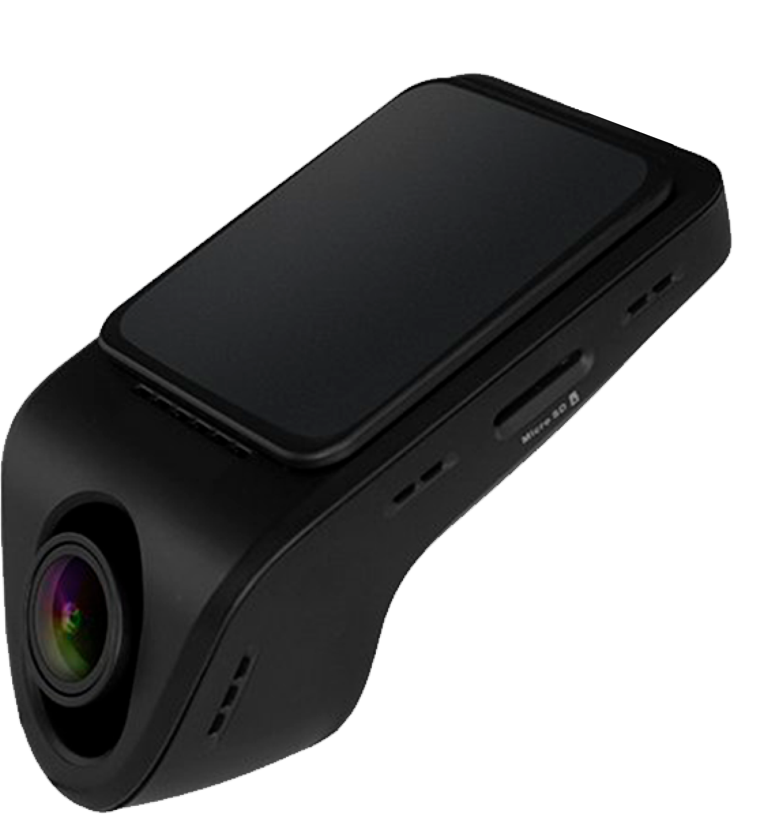
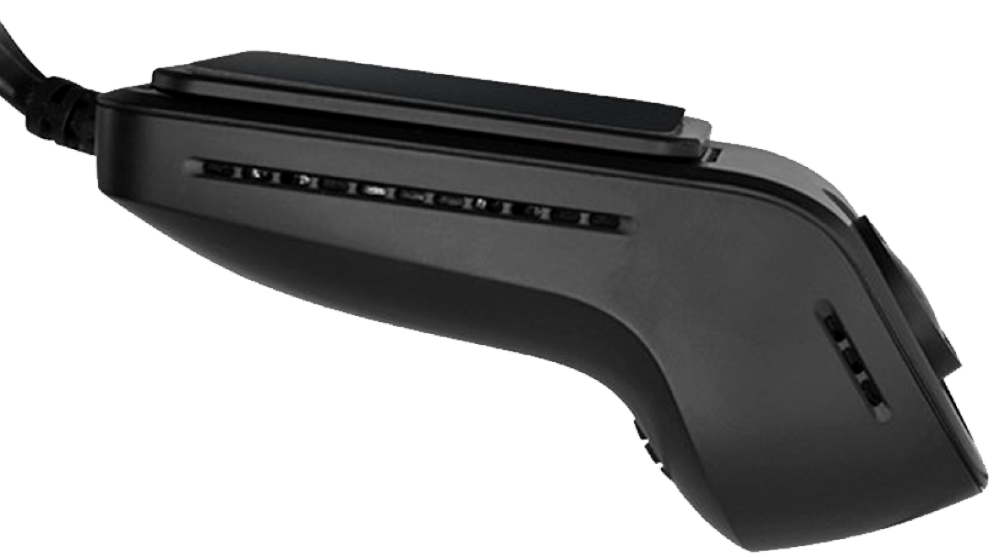
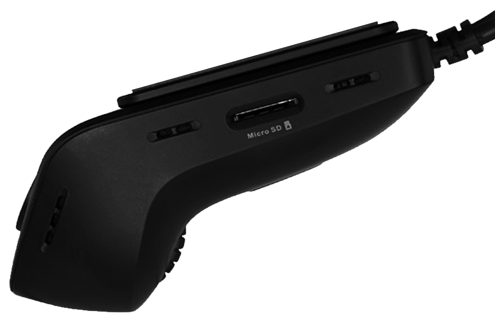

Зараз розповімо
на що здатен флагманський реєстратор F155

Дозволяє отримати віддалений доступ до архіву
Реєстратор автоматично завантажить усі дані та відзнятий контент у хмарне сховище. Переглядай ролики зі
звуком дистанційно звідки завгодно. Головна умова — наявність Wi-Fi.
Транслює онлайн
з автомобіля
Жодних зайвих рухів — керуй F155 з будь-якої точки світу. Лови найкоротший туторіал: встанови програму
Gazer Cloud, активуй зйомку. І все — прямий ефір з камери на екрані твого смартфону.
Надсилає розумні
PUSH-сповіщення
F155 — твій надійний друг, ефективніший за GSM-сигналізації. Мініатюрний розмір робить його непомітним для
хуліганів. Ти отримаєш повідомлення про можливі спроби викрадення, злому чи крадіжки.
Додаткові фішки: реєстратор попередить миттєво через смартфон, якщо раптом авто залишить заданий радіус або
ти перевищиш швидкість.
Дозволяє відстежувати маршрути
Слідкуй за переміщенням авто по мобільних онлайн-картах. Ти отримуватимеш на телефон координати та фото з
місця паркування після кожної зупинки.
Ця функція особливо актуальна, якщо є діти, які часто користуються або без дозволу “уганяють” сімейні
авто.
Надсилає аудіоповідом-лення водію
Надсилай через Gazer Cloud голосові повідомлення — вони відтворюватимуться через вбудований динамік. Ти
точно оціниш цю опцію, якщо на авто крім тебе ще їздить дружина чи діти.

Відкриває доступ до
професійної зйомки
Якісна зйомка у Full HD як при яскравому світлі, так і у темряві стане твоєю приємною нормою. Широкий кут
огляду 160° зафіксує номерні знаки, дорожню розмітку та інші об'єкти в русі.
Веде
охоронну зйомку
І робить це, до речі, дуже швидко. Без проблем відправляй відеоархіви на телефон, планшет або ноутбук.
Фіксує екстрені
події
У разі активації датчика удару F155 автоматично збереже останній ролик і миттєво відправить його до
хмарного сховища. Ти отримаєш сповіщення на телефон.

Стане для
тебе майже непомітним
Зовні F155 нагадує датчик дощу. Завдяки своїй мініатюрності він не закриватиме тобі огляд. Установка
абсолютно безпечна та не ушкоджує скло.

Працює автономно 24/7
Реєстратор вмикається та вимикається автоматично з двигуном. У разі потреби самостійно звільнить місце на
карті пам'яті: видалить старі ролики, щоб записувати нові.
Завантажує контент у програму Gazer Cloud через Wi-Fi
І робить це, до речі, дуже швидко. Без проблем відправляй відеоархіви на телефон, планшет або ноутбук.
"Роздає" інтернет на будь-які гаджети
F155 — повноцінний роутер для Android пристроїв. Він обладнаний функцією Hotspot — так званим режимом
модему.
Ще один короткий гайд: активуй точку доступу через додаток і "роздавай" трафік з SIM-карти, вставленої у
зовнішній LTE модуль.